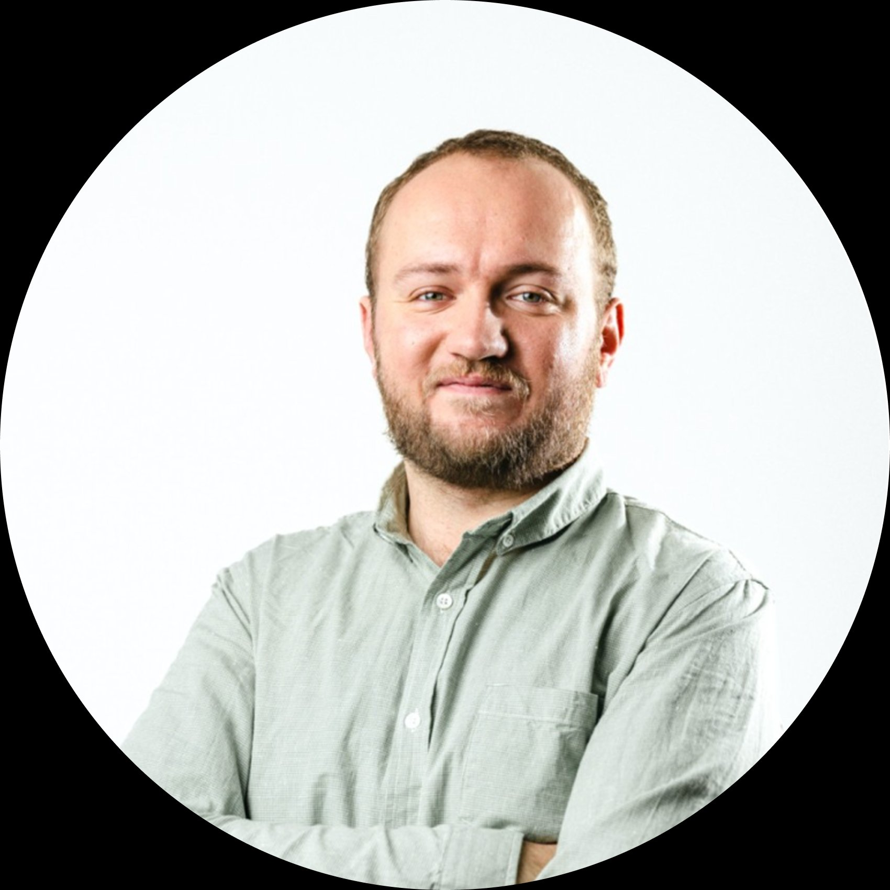
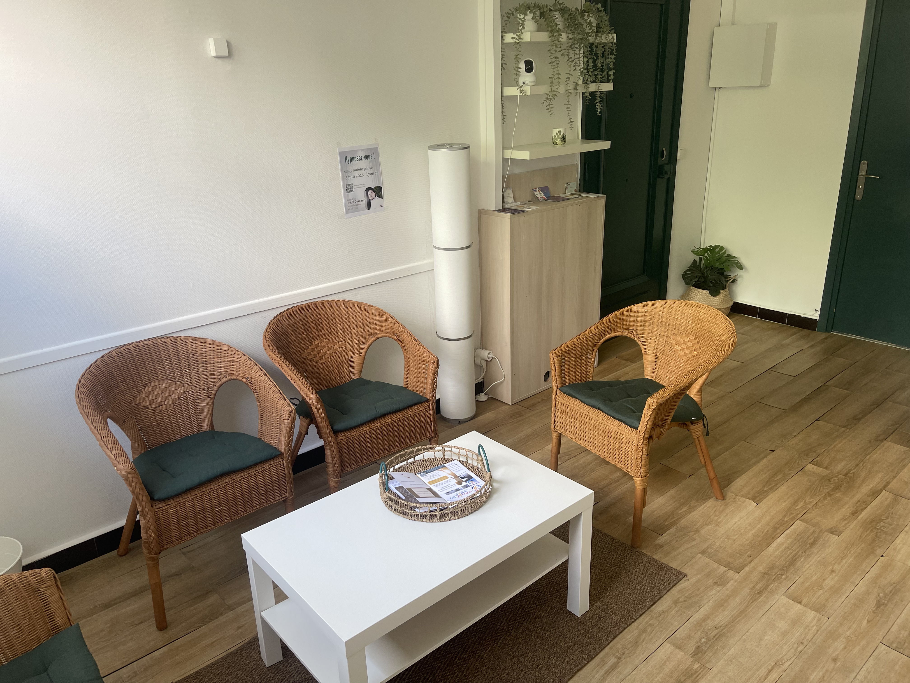
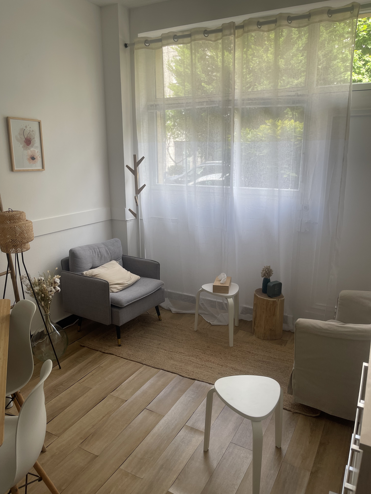

Psychologue à Lyon 6 · Burnout · Anxiété · Sens
Parfois, on se réveille épuisé sans vraiment savoir pourquoi. On doute, on s'inquiète, on perd le fil. Dans un espace confidentiel et sans jugement, je vous aide à mieux comprendre ce que vous traversez et à aller mieux.

Psychologue clinicien (RPPS n° 10109835404), diplômé de l'Université Paris 8, je suis spécialisé en Thérapies Cognitivo-Comportementales (TCC). J'exerce en cabinet à Lyon 6 et en téléconsultation.
Avant de me consacrer pleinement à la pratique clinique, j'ai évolué pendant près de six ans au cœur de l'écosystème start-up français, dans des fonctions mêlant analyse, accompagnement et structuration. Ces expériences m'ont permis d'observer de près les enjeux humains liés à la performance, à la charge mentale, à la difficulté à poser des limites et à la fatigue invisible dans des environnements professionnels exigeants.
Un espace calme et confidentiel au 116 rue Vauban, Lyon 6e — conçu pour que vous puissiez vous poser et parler librement.


Les gens qui arrivent en première séance ont souvent du mal à mettre des mots sur ce qui ne va pas. Ils savent que quelque chose coince — dans leur travail, dans leur tête, dans leur quotidien — mais pas toujours où exactement.
C'est souvent là que ça commence : un épuisement qui s'installe, une anxiété qui tourne en boucle, un sentiment de ne plus trouver sa place, une difficulté à poser des limites. Pas forcément une crise. Juste quelque chose qui pèse.
J'accompagne principalement des adultes sur des problématiques liées au travail et à la vie personnelle — burn-out, bored-out, stress, anxiété, perte de sens, charge mentale, confiance en soi, régulation des émotions, équilibre pro-perso.
La première séance, je pose beaucoup de questions. Mon objectif : comprendre où ça bloque vraiment, où est la souffrance. Pas pour coller une étiquette, mais pour qu'on puisse définir ensemble un objectif concret — et surtout vérifier qu'on peut travailler ensemble. Parce que la relation compte autant que la méthode.
Je travaille avec mon franc-parler, parfois de l'humour, et surtout un vrai échange — pas un monologue de psy derrière son bureau. Les séances s'articulent autour de ce que vous vivez concrètement, pas de théories abstraites.
Mon cadre de référence, ce sont les Thérapies Cognitivo-Comportementales (TCC) — des thérapies brèves, validées scientifiquement, qui travaillent sur le lien entre ce qu'on pense, ce qu'on ressent et ce qu'on fait. Pas pour "positiver" ou effacer ce qui est difficile, mais pour comprendre ce qui se joue et trouver des leviers concrets pour aller mieux.
Ce qui m'intéresse, c'est de vous aider à développer vos propres clés de lecture — pour que vous n'ayez plus besoin de moi.
N'hésitez pas à m'envoyer un message — ou à réserver directement une première séance, sans engagement.
1ère consultation
40 €
45 min · Évaluation et clarification de la demande
Séance de suivi
70 €
45 min · Séances individuelles régulières
Prendre rendez-vous avec un psy, c'est déjà un acte. Ça peut faire peur, ou simplement demander du courage. C'est normal.
La première séance dure 45 minutes. On se rencontre, je pose des questions, j'essaie de comprendre votre situation, ce qui coince, où est la souffrance. À la fin, on définit ensemble un objectif — et on voit si on peut travailler ensemble. Il n'y a aucun engagement au-delà de ce premier rendez-vous.
Première séance : 40 € · Séances de suivi : 70 € · Règlement par chèque, virement ou espèces · Annulation gratuite jusqu'à 48h avant
Richard Samier · Psychologue · RPPS n° 10109835404 · Université Paris 8 · Thérapies Cognitivo-Comportementales (TCC)